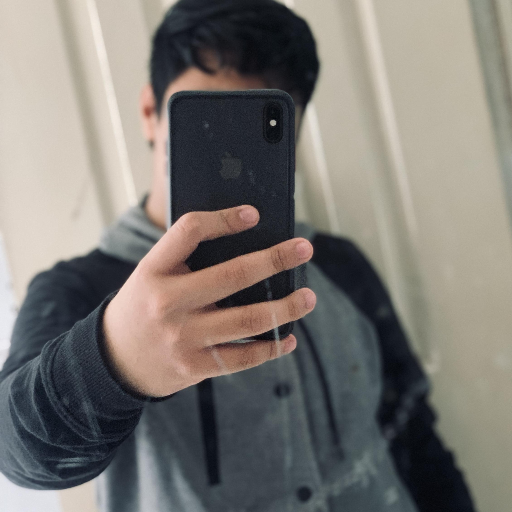

Inicio
Biografia
Página de Kinal
Biografia
Mi nombre es Cristian Alfredo Luna Sisimit
naci el 22 de enero de 2007
Actualmente cuento con 17 años y soy estudiante
activo de sexto grado del Centro Educativo Técnico
Laboral KINAL.
Mis expectativas para este ultimo año de mi perito
en computación son muy altas ya que una de mis metas
es lograr ser unos de los ganadores de la beca Juan Bautista
pero para eso debo sentrarme en el presente y lograr las
mayores notas posibles.
Mis sueños yo los pusiera más como metas que quiero
lograr conseguir en el transcurso del tiempo.
Unas de mis metas academicas principales es poder
llegar a graduarme de la universidad de Ingeniero
en Sistemas.
